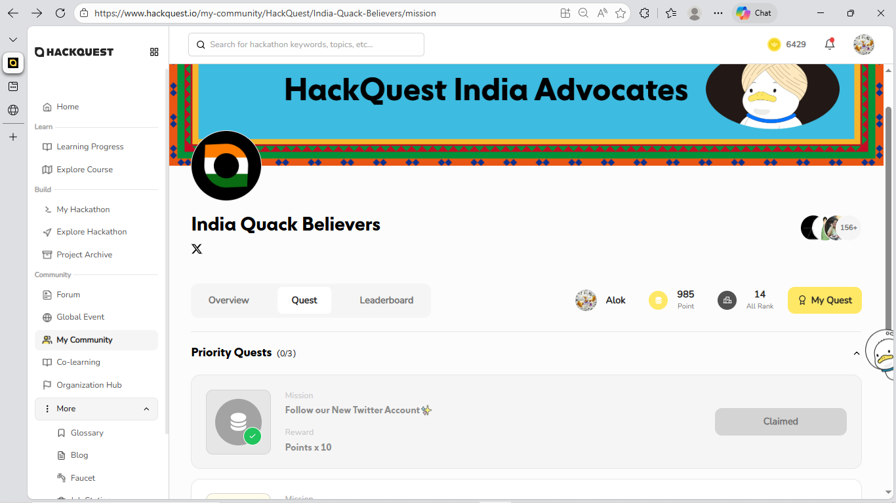
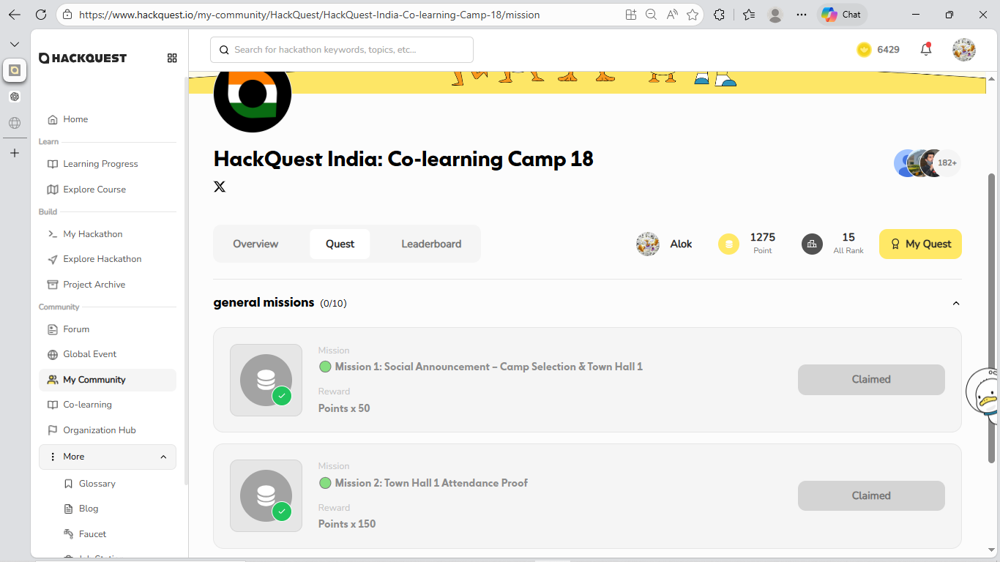

Issue Summary
Even after successfully submitting and claiming quests, the progress counters (e.g., 0/3, 0/9) do not update. The UI continues to show zero completed quests despite missions being marked as "Claimed".
Frontend Perspective
- UI shows mission status as Claimed.
- Progress counter remains 0/3 instead of updating.
- Possible state not refreshed after claim action.
- React/Vue state or API response may not be updating progress field.
- Potential caching issue or missing re-render trigger.
Backend Perspective
- Database may not be incrementing completed quest count.
- Progress API may be returning stale or incorrect value.
- Claim endpoint may update status but not aggregated progress.
- Possible race condition between claim and progress summary calculation.
User Experience Impact
- Reduces user confidence in the reliability of the platform's progress tracking and logic.
- Creates perception of poor frontend/backend logic flow, undermining trust in the system.
- May cause confusion about how progress and completion are tracked, even if scoring is accurate.
Proof (Screenshots)

Screenshot 1: Priority Quests showing 0/3

Screenshot 2: Onboarding Quest showing claimed but 0/3
Steps to Reproduce
- Login to HackQuest.
- Navigate to My Community → Quest tab.
- Complete and claim any onboarding or priority quest.
- Observe the progress counter (0/3 or 0/9).
Expected vs Actual
Expected
Progress counter updates dynamically (e.g., 1/3, 2/3).
Actual
Progress remains at 0 despite completed and claimed missions.
Proof (Video)
Video showing quests being claimed but progress counter not updating.